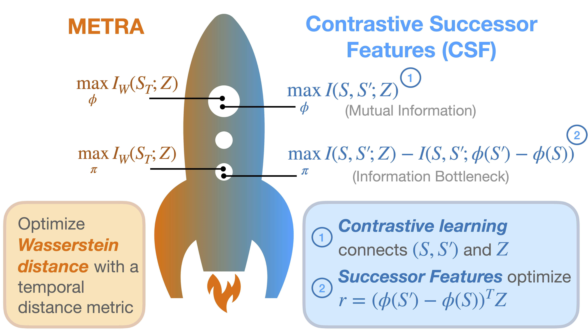

Can a MISL Fly? Analysis and Ingredients for Mutual Information Skill Learning

Abstract: Self-supervised learning has the potential of lifting several of the key challenges in reinforcement learning today, such as exploration, representation learning, and reward design. Recent work (METRA) has effectively argued that moving away from mutual information and instead optimizing a certain Wasserstein distance is important for good performance. In this paper, we argue that the benefits seen in that paper can largely be explained within the existing framework of mutual information skill learning (MISL). Our analysis suggests a new MISL method (contrastive successor features) that retains the excellent performance of METRA with fewer moving parts, and highlights connections between skill learning, contrastive representation learning, and successor features. Finally, through careful ablation studies, we provide further insight into some of the key ingredients for both our method and METRA.
Code: https://github.com/Princeton-RL/contrastive-successor-features